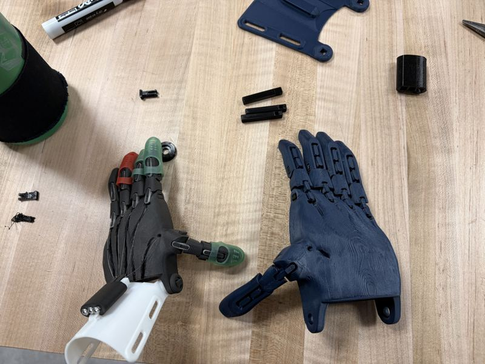
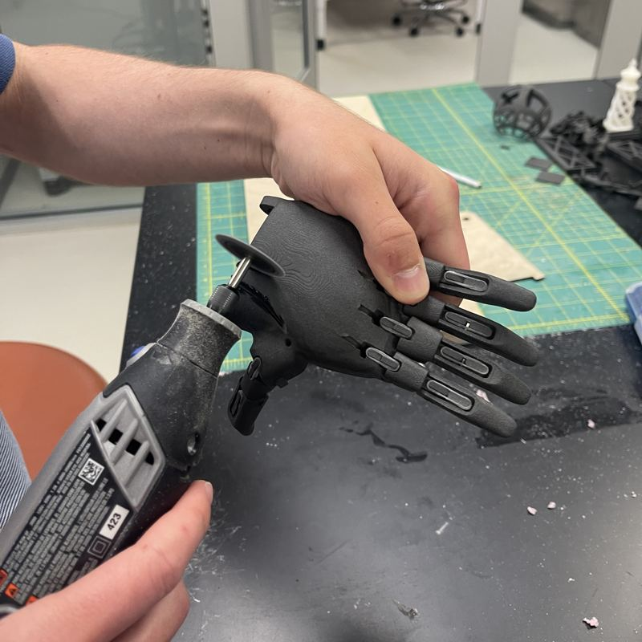

Hand one showed us what goes wrong. For hand two, we changed printers.

Sep 12, 2026 · Left, hand one. Right, hand two.
← Left · Done · Summer 2026
Hand one
Printed
SLS nylon, white PLA cuff
Problem
Powder stuck in the tendon channels. The first cuff was nylon too, and it snapped when we tried to shape it in hot water. Hot-water forming is meant for PLA; nylon barely softens at that temperature.
Fix
Cut a new channel through the palm with a Dremel. Reprinted the cuff in PLA, which shaped cleanly.
Right → · Done · Sep 2026
Hand two
Printed
PLA on a Prusa
Changed
Switched from SLS powder to a filament printer, so no powder in the channels
From the first build

Jul 7 · Cutting the new palm channelJul 8 · Partly assembled: two fingers working